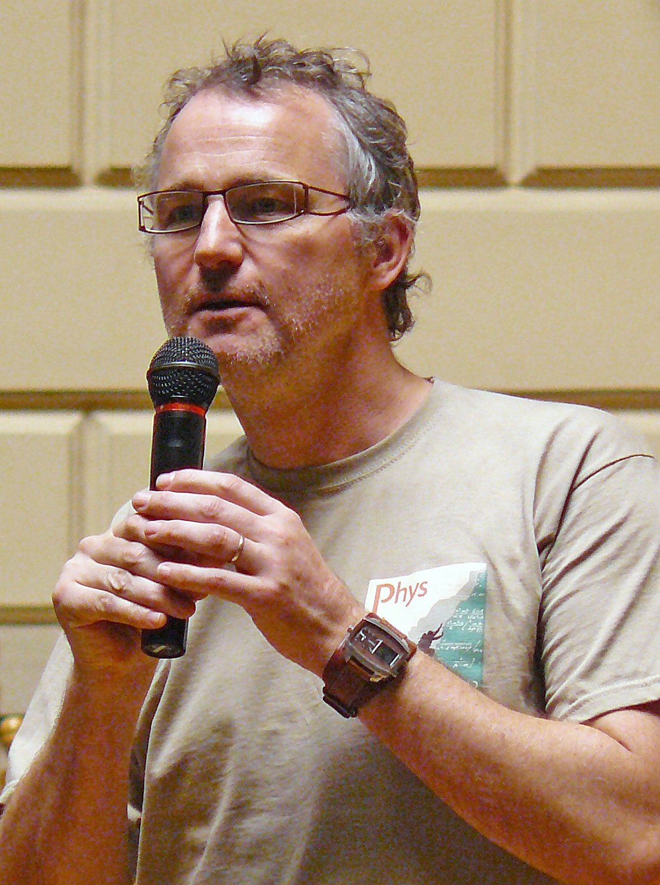

|


|
GEOMETRY, PHYSICS, FREEDOM... THE WORLD OF CONNECTIONSBertrand BercheIJL, University de LorraineRalph KennaApplied Mathematics Research Centre, Coventry UniversityAbove the upper critical dimension, the breakdown of hyperscaling is associated with dangerous irrelevant variables in the renormalization group formalism at least for systems with periodic boundary conditions. While these have been extensively studied, there have been only a few analyses of finite-size scaling with free boundary conditions. The conventional paradigm there is that, in contrast to periodic geometries, finite-size scaling is Gaussian, governed by a correlation length comensurate with the lattice extent. Here, we present analytical and numerical results which indicate that this paradigm is unsupported, both at the infinite-volume critical point and at the pseudocritical point where the finite-size susceptibility peaks. Instead the evidence indicates that finite-size scaling at the pseudocritical point is similar to that in the periodic case. An analytic explanation is offered which allows hyperscaling to be extended beyond the upper critical dimension.Personal webpage (Berche) Personal webpage (Kenna) |